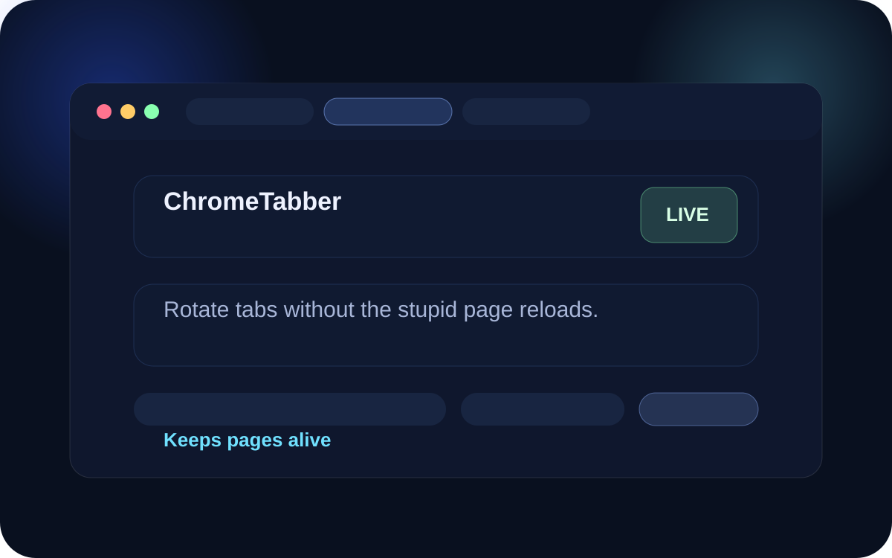
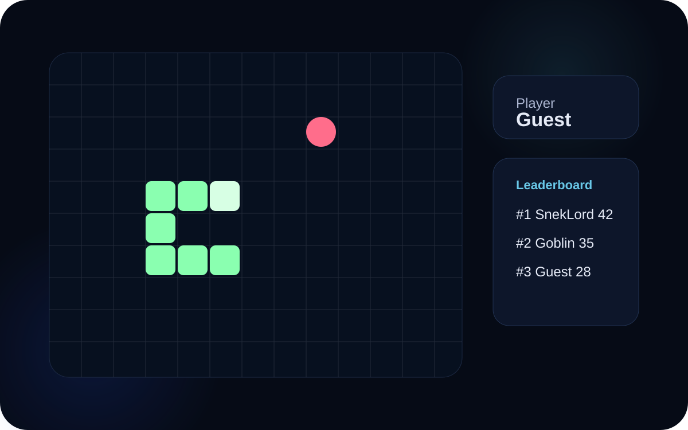

Projects
A tiny shelf of usable nonsense.
Cleaner layout, less page clutter. Click the extension to go out to the Chrome Web Store. Click Snek to go one layer deeper and actually play the thing.

Chrome extension
ChromeTabber
Built because all the tab carousel extensions I tried kept reloading pages when switching to them, which made them useless for the thing I needed at work. So I made one that actually behaved and it ended up getting used there.
- solved a real problem instead of being demo wallpaper
- keeps the rotation smooth without nuking page state
- opens the actual Chrome Web Store listing

Playable game
Snek
A rebuild of classic Nokia Snake because I’ve been obsessed with that stupid little game forever. It’s now living here with an online leaderboard so nostalgia can get competitive for no good reason.
- dedicated game page instead of cluttering the projects shelf
- keyboard and mobile controls
- online leaderboard still wired in